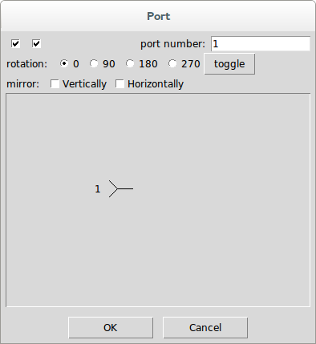
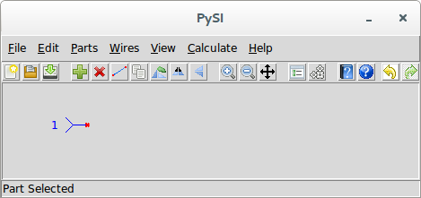

Add Port
This command is used to add ports to a schematic.
This command is a shortcut which is the same as invoking
Add Part↑ and selecting Port from the Special parts category.

On this dialog, you see the only property, the port number, the orientation settings for the port, and a picture of the port element.
The port part property are shown with two checkboxes, followed by a label, followed by the port number. The port number is filled in by default as the lowest port number not already in the schematic.
The first checkbox determines whether the port number should be shown in the schematic.
The second checkbox is superfluous for ports. For part properties it determines whether the keyword for the property should be shown, but a port number does not have a keyword, just the number.
The port number is modified by clicking inside the white area where the port number value is shown.
To change the value, you can either click once or double-click inside the value entry box. When you click once, the cursor is placed at the location clicked and you can edit the port number that is already there. If you double-click, the entry is cleared and you can enter an entirely new port number.
keep in mind that when you have completed drawing your schematic, the port number values must be numbered from 1 to however many ports are present with no gaps in the numbers. Otherwise you will get an error when you go to calculate.
When you are satisfied with the port number and orientation, press OK.
The part properties dialog disappears and, when hovered over the canvas, you will see that your mouse cursor has now changed to a finger to indicate that the port can now be placed. left-clicking now has the port shown and selected:

Keeping the button pressed, the port remains selected and can be precisely placed.
Note that until a port is connected, you will see a red x at the port connection point.
To change the port number after the port has been placed, simply double-click on the part to bring up the part properties, or select the port and use the
Edit Properties↓ command.
If at any time in the process of adding a port, you press the Cancel button (or <escape>), the port addition is aborted and you return to the schematic with no new port added.